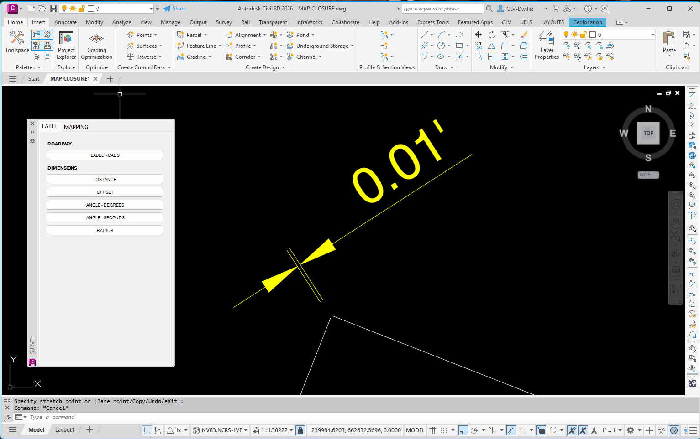
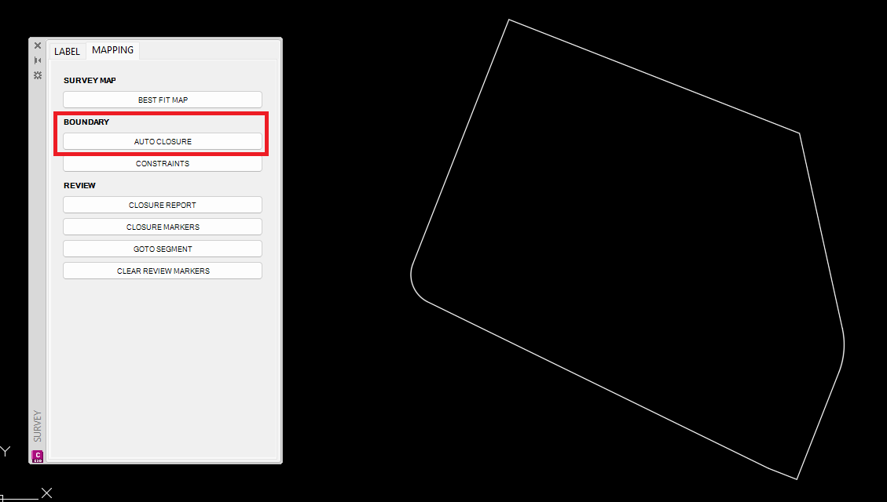
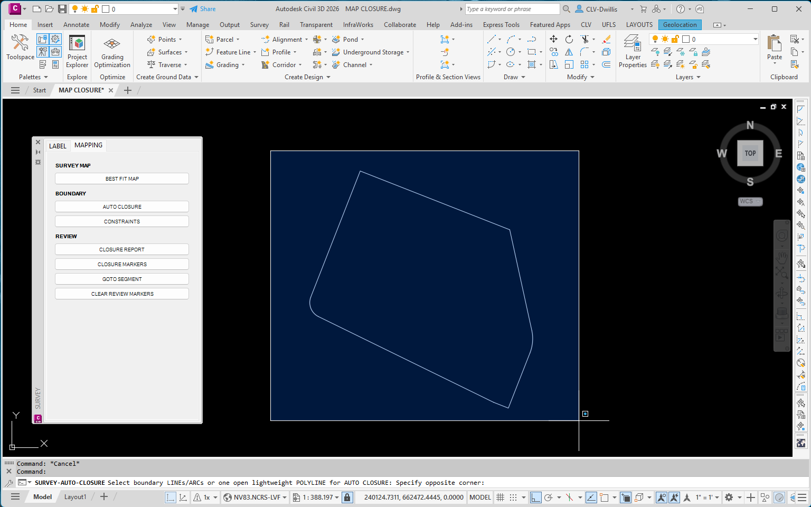
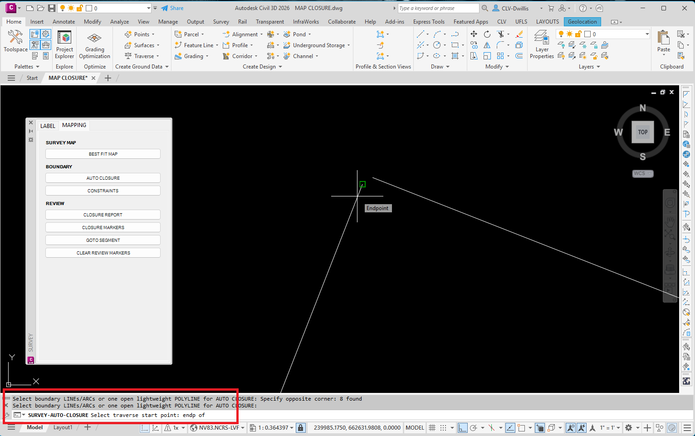
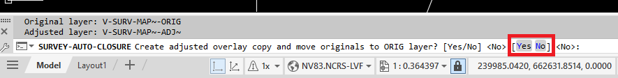
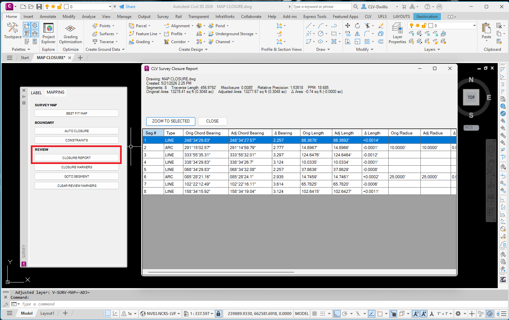
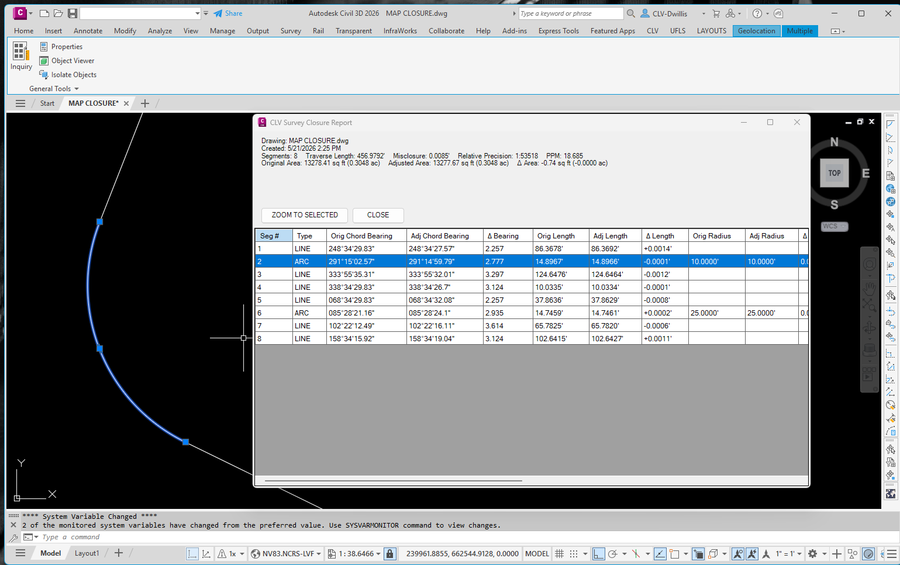

AUTO CLOSURE
Reviews selected boundary linework, creates an adjusted closure, and provides a closure report for checking bearings, distances, curves, error, and area.
Use this when: A boundary is close but needs a closure adjustment and a quick report for review. The command creates adjusted linework on a review layer so the original boundary can be compared before final cleanup.
Basic Use
- Review the boundary and current closure condition before starting.
- Open Q4 Survey + Mapping, go to the MAPPING tab, and select AUTO CLOSURE under BOUNDARY.
- Window or select the boundary linework to adjust.
- Follow the command line prompts. Select the Traverse start point.
- Select Yes to recreate the adjusted overlay layer.
- Review the adjusted boundary overlay against the original boundary.
- Select CLOSURE REPORT to open the closure report and review segment data.
- Use the report and the selected segment preview to inspect bearings, distances, curve information, error values, and area before accepting the result.







Notes
- The adjusted linework is intended for review before final cleanup.
- Use the report table and CAD preview together; the report values are easier to verify when the matching segment is visible in the drawing.
- If the selected geometry does not represent the intended boundary loop, cancel and reselect the correct boundary objects.